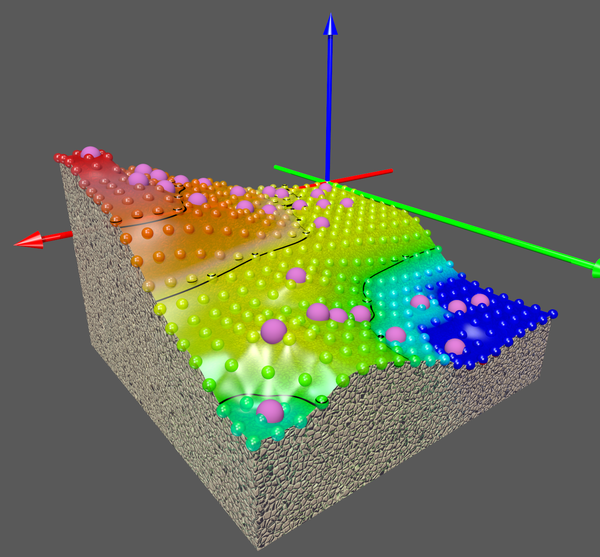
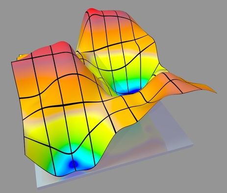
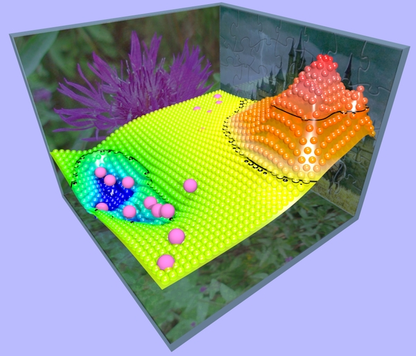
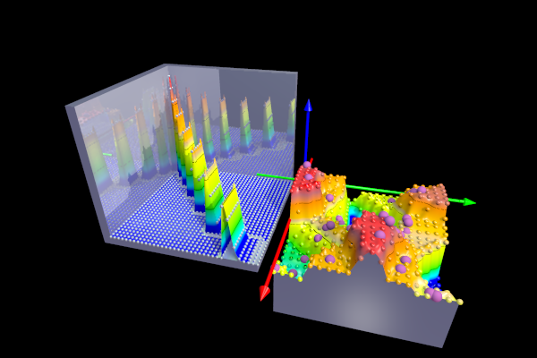

TABLE OF CONTENTS
- 1. ScPovPlot3D/BPatchSurf.inc
- 1.1. BPatchSurf.inc/DrawAllPatches
- 1.2. BPatchSurf.inc/DrawAllPatches_UV()
- 1.3. BPatchSurf.inc/DrawAllPatches_UV_multi()
- 1.4. BPatchSurf.inc/DrawAllPatches_UVpng()
- 1.5. BPatchSurf.inc/DrawAllPatchesGeo
- 1.6. BPatchSurf.inc/DrawAllPatchesWithMap
- 1.7. BPatchSurf.inc/DrawAllPatchesWithTexture
- 1.8. BPatchSurf.inc/DrawPatch
- 1.9. BPatchSurf.inc/DrawPatch_UV()
- 1.10. BPatchSurf.inc/DrawPatch_UV_multi()
- 1.11. BPatchSurf.inc/DrawPatch_UVpng
- 1.12. BPatchSurf.inc/FunctionSurface, EvalFuncPatchedSurf
- 1.13. BPatchSurf.inc/MatrixFileSurface()
- 1.14. BPatchSurf.inc/RawDataSurfaceExt(), RawDataSurface()
- 1.15. BPatchSurf.inc/ScatterDataSurfaceExp()
- 1.16. BPatchSurf.inc/DrawCardPoints
- 1.17. BPatchSurf.inc/Inline functions
- 1.18. BPatchSurf.inc/Inline kriging functions()
- 1.19. BPatchSurf.inc/SetDZero
- 1.20. BPatchSurf.inc/SetInterior()
- 1.21. BPatchSurf.inc/SetRGBFTColor
- 1.22. BPatchSurf.inc/SetTexture
- 1.23. BPatchSurf.inc/SetVScale
- 1.24. BPatchSurf.inc/SetVShift()
- 1.25. BPatchSurf.inc/ImageConstants
- 1.26. BPatchSurf.inc/DeclareLevel, tmpColour, tmpColour1, tmpColour2, DZero
- 1.27. BPatchSurf.inc/DZero
- 1.28. BPatchSurf.inc/VScale
- 1.29. BPatchSurf.inc/VShift
ScPovPlot3D/BPatchSurf.inc [ Modules ]
PURPOSE
New templates for drawing smoothed by Bezier spline surfaces:




Fig.[BPatchSurf]. New, 3D surface modelling system. There is still a lot TODO: more automation and so on
VERSION
3.1.0.3, tested on PovRay 3.7.
AUTHOR
Janusz Opi쓰 Ph.D.
jmo{at}agh.edu.pl, janusz.opila{at}gmail.com
Dept. of Applied Informatics,
https://www.facebook.com/KatedraInformatykiStosowanejWZAGH/
http://kis.zarz.agh.edu.pl/
AGH University of Science & Technology, Cracow, Poland
Maintained by Janusz Opi쓰 Ph.D.
Homepage: http://scpovplot3d.sourceforge.net
HISTORY
3.1.0.3 replaced in line 1085: <xx,yy,zz> -> <xx,yy,VScale*zz+VShift>
COPYRIGHT
GNU GPL v.3 License (c) 2012-now by Janusz Opi쓰 Ph.D. AGH University of Science and Technology
BPatchSurf.inc/DrawAllPatches [ Main macros ]
[ Top ] [ BPatchSurf.inc ] [ Main macros ]
PURPOSE
this helper macro renders all bezier_patch{}'es in single surface its simplicity results from sophisticated data structure. This macro applies default texture to the surface, so one don't need another
SYNOPSIS
#macro DrawAllPatches() // default pigment gradient
INPUTS
None
SEE ALSO
one should also refer to:
FunctionSurface (), EvalPatchedSurface (), DrawPatch (), DrawAllPatchesGeo (), DrawAllPatchesWithTexture (), DrawAllPatchesWithMap ()
BPatchSurf.inc/DrawAllPatches_UV() [ Main macros ]
[ Top ] [ BPatchSurf.inc ] [ Main macros ]
PURPOSE
This macro renders all bezier_patch{}'es in single surface its simplicity results from sophisticated data structure :) The macro applies UV texture to the whole surface.
SYNOPSIS
DrawAllPatches_UV(ImageConstants _type, string filename _file)
INPUTS
ImageConstants _type - indicates format of the bitmap passed to the macro as uv_mapping{}. _type = [ _JPG | _BMP | _GIF | _PNG |_TGA | _SYS |_EXR |_HDR |_IFF |_PGM |_PPM |_TIF ] string filename - Name of map for the surface - Consult source file for details.
EXAMPLE
DrawAllPatches_UV( _PNG, "GriddVividRed.png") // covers surface with copies of "GriddVividRed.png" file
SEE ALSO
one should also refer to:
FunctionSurface(), EvalPatchedSurface(), DrawPatch(), DrawPatch_UV(), DrawPatch_UV_multi(), DrawPatch(), DrawAllPatches(), DrawAllPatchesGeo(), DrawAllPatchesWithTexture()
BPatchSurf.inc/DrawAllPatches_UV_multi() [ Main macros ]
[ Top ] [ BPatchSurf.inc ] [ Main macros ]
PURPOSE
this macro renders all bezier_patch{}'es in this surface and applies UV texture to a every single patch by iterative formula
SYNOPSIS
DrawAllPatches_UV_multi(ImageConstants _type, string _file, uinteger _max)
INPUTS
ImageConstants _type - indicates format of the bitmap passed to the macro as uv_map{} _type = [ _JPG | _BMP | _GIF | _PNG |_TGA | _SYS |_EXR |_HDR |_IFF |_PGM |_PPM |_TIF |_TIF ] string _file - constant part of image file name uinteger _max - automatically generated suffix goes from '0' up to '_max-1'. Suffix is then concatenated - with _file and extension defined by _type. Thus final image name is defined. - This image will be used as uv_map for consecutive patches. Calls macro DrawPatch_UV_multi(). - _max = 2..100/ parameter of mod(N, _max) operation. Consult source file for details.
EXAMPLE
DrawAllPatches_UV_multi(_JPG, "Next", 7) // renders all patches and uses files Next00.jpg through Next06.jpg as maps for consecutive patches
SEE ALSO
one should also refer to:
FunctionSurface(), EvalPatchedSurface(), DrawPatch(), DrawPatch_UV(), DrawPatch(), DrawAllPatches(), DrawAllPatchesGeo(), DrawAllPatchesWithTexture()
BPatchSurf.inc/DrawAllPatches_UVpng() [ Main macros ]
[ Top ] [ BPatchSurf.inc ] [ Main macros ]
PURPOSE
This macro renders single bezier_patch{} depicted by given indices. Its simplicity results from sophisticated data structure. This macro applies UV'ed texture to the surface given in _UV_png (PNG format) file.
SYNOPSIS
DrawPatch_UVpng(ipy, ipx, _UV_png)
INPUTS
None
SEE ALSO
one should also refer to:
FunctionSurface(), EvalPatchedSurface(), DrawPatch(), DrawPatch_UVpng(), DrawAllPatches(), DrawAllPatchesGeo(), DrawAllPatchesWithTexture()
BPatchSurf.inc/DrawAllPatchesGeo [ Main macros ]
[ Top ] [ BPatchSurf.inc ] [ Main macros ]
PURPOSE
this macro renders all bezier_patch{}'es in single surface its simplicity results from sophisticated data structure. This macro applies NO texture to the surface, so one MUST aplly it by hand
SYNOPSIS
#macro DrawAllPatchesGeo() //geometry only !!!
INPUTS
None
SEE ALSO
one should also check:
FunctionSurface (), EvalPatchedSurface (), DrawPatch (), DrawAllPatches (), DrawAllPatchesWithTexture (), DrawPatch_UVpng
BPatchSurf.inc/DrawAllPatchesWithMap [ Main macros ]
[ Top ] [ BPatchSurf.inc ] [ Main macros ]
PURPOSE
this macro renders all bezier_patch{}'es in single surface its simplicity results from sophisticated data structure. This macro applies default texture map to the surface, so one don't need another
SYNOPSIS
#macro DrawAllPatchesWithMap( _ThisMap)
INPUTS
colormapdef _ThisMap - any valid color_map{} definition, uses passed color_map{} object, one from ColorMaps.inc or another self defined
SEE ALSO
one should also refer to:
FunctionSurface (), EvalPatchedSurface (), DrawPatch (), DrawAllPatches (), DrawAllPatchesGeo (), DrawAllPatchesWithTexture ()
BPatchSurf.inc/DrawAllPatchesWithTexture [ Main macros ]
[ Top ] [ BPatchSurf.inc ] [ Main macros ]
PURPOSE
this helper macro renders all bezier_patch{}'es in single surface its simplicity results from sophisticated data structure. This macro applies default texture to the surface, so one don't need another
SYNOPSIS
#macro DrawAllPatchesWithTexture( _MyTexture) // default pigment gradient
INPUTS
texturedef _MyTexture - any valid texture definition
SEE ALSO
one should also refer to:
FunctionSurface (), EvalPatchedSurface (), DrawPatch (), DrawAllPatches (), DrawAllPatchesGeo (), DrawAllPatchesWithMap ()
BPatchSurf.inc/DrawPatch [ Main macros ]
[ Top ] [ BPatchSurf.inc ] [ Main macros ]
PURPOSE
this helper macro renders single bezier_patch{}
SYNOPSIS
#macro DrawPatch(ipy, ipx)
INPUTS
uinteger ipy, uinteger ipx - two unsigned integer numbers, indices to array which contains definition of all patches
SEE ALSO
one should also refer to:
FunctionSurface (), DrawPatch_UV (), EvalPatchedSurface (), DrawAllPatchesGeo (), DrawAllPatchesWithTexture (), DrawAllPatchesWithMap (), source code of this module
BPatchSurf.inc/DrawPatch_UV() [ Main macros ]
[ Top ] [ BPatchSurf.inc ] [ Main macros ]
PURPOSE
this macro renders all bezier_patch{}'es in single surface its simplicity results from sophisticated data structure. This macro applies NO texture to the surface, so one MUST aplly it by hand
SYNOPSIS
DrawPatch_UV(uinteger ipy, uinteger ipx, ImageConstants _type, string filename _UV_png)
INPUTS
uinteger ipy - and .. uinteger ipx - two unsigned integer numbers, indices to array which contains definition of all patches ImageConstants _type - indicates format of the bitmap passed to the macro as uv_map{} _type = [ _JPG | _BMP | _GIF | _PNG |_TGA | _SYS |_EXR |_HDR |_IFF |_PGM |_PPM |_TIF |_TIF ] string filename _UV_png - valid filename of bitmap of type declared above this bitmap should be perpendicular, preferably rectangular, some images are distributed with the package as G00.jpg to G10.jpg as well as Gridd*.jpg files in "./img" subfolder
SEE ALSO
one should also refer to:
FunctionSurface(), DrawPatch(), EvalPatchedSurface(), DrawPatch(), DrawAllPatches(), DrawAllPatchesGeo(), DrawAllPatchesWithTexture()
BPatchSurf.inc/DrawPatch_UV_multi() [ Main macros ]
[ Top ] [ BPatchSurf.inc ] [ Main macros ]
PURPOSE
this macro renders single bezier_patch{} and applies UV texture to it
SYNOPSIS
#macro DrawPatch_UV_multi(ipy, ipx, _type, _UV_core, _max)
INPUTS
uinteger ipy - and .. uinteger ipx - two unsigned integer numbers, indices to array which contains definition of all patches ImageConstants _type - indicates format of the bitmap passed to the macro as uv_map{} _type = [ _JPG | _BMP | _GIF | _PNG |_TGA | _SYS |_EXR |_HDR |_IFF |_PGM |_PPM |_TIF |_TIF ] string _UV_core - constant part of image file uinteger _max - automatically generated suffix goes from '0' up to '_max-1'. Suffix is then concatenated - with _UV_core and extension defined by _type. Thus final image name is defined. - This image will be used as uv_map for the given by ipx&ipy indices patch. - Consult source file for details.
EXAMPLE
DrawPatch_UV_multi(3, 5, _JPG, "Next", 7) // renders patch 3rd/5th with uv image named: "Next01.jpg"
SEE ALSO
one should also refer to:
FunctionSurface (), DrawPatch (), DrawPatch_UV (), EvalPatchedSurface (), DrawPatch (), DrawAllPatches (), DrawAllPatchesGeo (), DrawAllPatchesWithTexture ()
BPatchSurf.inc/DrawPatch_UVpng [ Main macros ]
[ Top ] [ BPatchSurf.inc ] [ Main macros ]
PURPOSE
This macro renders single bezier_patch{} depicted by given indices. Its simplicity results from sophisticated data structure. This macro applies UV'ed texture to the surface given in _UV_png (PNG format) file.
SYNOPSIS
#macro DrawPatch_UVpng(ipy, ipx, _UV_png)
INPUTS
integer ipy - integer ipx - indices to given bezier patch item string_fn _UV_png - filename of PNG raster bitmap
SEE ALSO
one should also refer to:
FunctionSurface (), EvalPatchedSurface (), DrawPatch (), DrawAllPatches_UVpng (), DrawAllPatches (), DrawAllPatchesGeo (), DrawAllPatchesWithTexture ()
BPatchSurf.inc/FunctionSurface, EvalFuncPatchedSurf [ Main macros ]
[ Top ] [ BPatchSurf.inc ] [ Main macros ]
PURPOSE
Draws surface defined by z=Func(x,y) Function, defined in real world parameters
SYNOPSIS
FunctionSurface(pfunction Func, float x1, float x2, integer Nxx, float y1, float y2, integer Nyy )
INPUTS
pfunction Func -> inline f(x,y) => #declare abc=Function(x,y){x-y} Function declared in real x,y,z coordinates float x1, float x2, integer Nxx => x-min, x-max, num. of cardinal (exact value) points float y1, float y2, integer Nyy => the same but for y axis
EXAMPLE
#declare SinCos3 = Function(i, j){ 2*sin(pi/2*i)+cos(pi/3*j)+i*j/400 } FunctionSurface(SinCos3, 0, 4*pi, 20, 0, 4*pi, 20) // prepare SinCos3(x,y) surface over rectangle // extending from 0 to 4*Pi on X and Y axis DrawAllPatches() // and then render it
SEE ALSO
one should also refer to:
MatrixFileSurface (), EvalPatchedSurface (), DrawPatch (), DrawPatch_UV (), DrawPatch (), DrawAllPatches (), DrawAllPatchesGeo(), DrawAllPatchesWithTexture (), EvalFuncPatchedSurf ()
BPatchSurf.inc/MatrixFileSurface() [ Main macros ]
[ Top ] [ BPatchSurf.inc ] [ Main macros ]
PURPOSE
Imports data from file InFileName, prepares data structure for EvalPatchedSurf() macro and eventually calls it.
Format of input file (like matrix - Cx is for Column, Ry for Row):
+------> [ rows mapped along X real] >-----> +------> [ X real] >----->
| C1R1, C2R1, C3R3, ........... | z(x1y1), z(x2y1), z(x3y3), .....
| C1R2, | z(x1y2), z(x2y2),
| C1R3, | z(x1y3)),
v . . v . .
[column mapped along Y real] [Y real]
Macro is provided for drawing data in real coordinates. Data in a row have the same y coordinate but sequencial x's. Only 'z' (height) values are given, values for x&y are calculated from values given in the header of the input file. Watching at the data file you see resulting surface like seeing it vertically from bottom of the coordinate system, having X axis oriented toward right hand, and Y axis beforehand.
SYNOPSIS
MatrixFileSurface(string_fn InFileName)
INPUTS
string_fn filename InFileName - valid filename eg. "InSurfData.dat". Extension is not required nor fixed.
EXAMPLE
MatrixFileSurface("InSurfData.dat") // import data.. DrawAllPatches() // and then render all patches
SEE ALSO
one should also refer to:
FunctionSurface(), EvalPatchedSurface(), DrawPatch(), DrawPatch_UV(), DrawPatch(), DrawAllPatches(), DrawAllPatchesGeo(), DrawAllPatchesWithTexture()
BPatchSurf.inc/RawDataSurfaceExt(), RawDataSurface() [ Main macros ]
[ Top ] [ BPatchSurf.inc ] [ Main macros ]
PURPOSE
RawDataSurfaceExt() is just wrapper for RawDataSurface() Function
SYNOPSIS
INPUTS
EXAMPLE
RawDataSurfaceExt("SSurfA.dat", Gauss, Gauss, 0, 10, 20, 0, 10, 20) // DrawAllPatches() // and then render it OR RawDataSurface("SSurfA.dat", Gauss, Gauss, 2.0, 0, 10, 20, 0, 10, 20) // DrawAllPatches() // and then render it
SEE ALSO
one should also refer to:
RawDataSurface(), MatrixFileSurface(), EvalPatchedSurface(), DrawPatch(), DrawPatch_UV(), DrawPatch(), ScatterDataSurfaceExp(), DrawAllPatches(), DrawAllPatchesGeo(), DrawAllPatchesWithTexture()
BPatchSurf.inc/ScatterDataSurfaceExp() [ Main macros ]
[ Top ] [ BPatchSurf.inc ] [ Main macros ]
PURPOSE
ScatterDataSurfaceExp()
SYNOPSIS
INPUTS
EXAMPLE
ScatterDataSurfaceExp() DrawAllPatches() // and then render it
SEE ALSO
one should also refer to:
RawDataSurface(), MatrixFileSurface(), EvalPatchedSurface(), DrawPatch(), DrawPatch_UV(), DrawPatch(), DrawAllPatches(), DrawAllPatchesGeo(), DrawAllPatchesWithTexture()
BPatchSurf.inc/DrawCardPoints [ Helper macros ]
[ Top ] [ BPatchSurf.inc ] [ Helper macros ]
PURPOSE
this helper macro renders all "cardinal" ie. corner points of bicubic patches in the scene as spheres it is possible due to proper data structure. Macro renders pure geomtry, one have to define texture in #declare/object{} construct
SYNOPSIS
#macro DrawCardPoints( R) // Plots cardinal points of bicubic patches only
INPUTS
float R - radius of cardinal point
EXAMPLE
#declare PPP = object{DrawCardPoints(.2)}; object{ PPP texture {valid texture definition} }
SEE ALSO
one should also refer to:
object{} description in POVRay documentation
BPatchSurf.inc/Inline functions [ Helper macros ]
[ Top ] [ BPatchSurf.inc ] [ Helper macros ]
PURPOSE
helper functions applicable to macro: FunctionSurface(Func, x1, x2, Nxx, y1, y2, Nyy) used to draw surface by equation z=Func( x, y)
SYNOPSIS
#declare fId = Function(i, j){ ..single nonconditional statement.. }; see example
INPUTS
i, j - two float numbers for x, y argument values respectively, note that 'x' and 'y' symbols are predefined in POVRay as coord's system vectors
EXAMPLE
#declare SinCos3 = Function(i, j){ 2*sin(pi/2*i)+cos(pi/3*j)+i*j/400 } FunctionSurface(SinCos3, 0, 10, 11, 0, 10, 11) DrawAllPatches()
SEE ALSO
one should also refer to:
FunctionSurface(), DrawPatch(), DrawAllPatchesGeo(), DrawAllPatches(), DrawAllPatchesWithTexture(), DrawAllPatchesWithMap(), POVRay Function pointers
SOURCE
#declare Cos2Sin = Function(i, j){ 2*cos(1*(i*pi/18))*cos(1*(i*pi/18))-sin(2*(j*pi/18))} #declare SinCosP2= Function(i, j){ 2*sin(j*pi/18)*pow( cos(i*pi/18),2) } #declare SinCos3 = Function(i, j){ 2*sin(pi/2*i)+cos(pi/3*j)+i*j/400 }
BPatchSurf.inc/Inline kriging functions() [ Helper macros ]
[ Top ] [ BPatchSurf.inc ] [ Helper macros ]
PURPOSE
helper functions applicable to macro: smoothing & kriging functions: f=Func(float d)
SYNOPSIS
#declare fId = Function(i, j){ ..single nonconditional statement.. }; // see example below
INPUTS
i, j - two float numbers for x,y argument values respectively, note that 'x' and 'y' symbols are predefined in POVRay as coord's system vectors
EXAMPLE
#declare Newton = Function (d) { 1/d } // named after potential Function RawDataSurface("AnyFiled.dat", Newton, Llimiter, .5, 0, 10, 20, 0, 10, 20) DrawAllPatches()
SEE ALSO
one should also refer to:
FunctionSurface(), DrawPatch(), DrawAllPatchesGeo(), DrawAllPatches(), DrawAllPatchesWithTexture(), DrawAllPatchesWithMap(), POVRay Function pointers
SOURCE
#declare Newton = Function (d) { 1/d } // USELESS named after newtonian potential Function #declare Limiter = Function (d) { 1/DZero } // this Function is called when d<DZero #declare Newton2 = Function (d) { 1/pow(d,2) } // named after newtonian potential Function #declare Limiter2 = Function (d) { 1/pow(DZero,4) } // this Function is called when d<DZero #declare Newton4 = Function (d) { 1/pow(d,2) } // named after newtonian potential Function #declare Limiter4 = Function (d) { 1/pow(DZero,4) } // this Function is called when d<DZero #declare Exponent = Function (d) { exp(-d) } // #declare Gauss = Function (d) { exp(-pow(d,2))} // resembles gauss PDF distribution Function // simple kriging - more general example, which needs // two input values, interpreted as 'distance' and 'power' respectively #declare SKrig = Function (d, pw) { 1/(1.0+pow(d, pw)) } // SKrig(distance, power) // ======[ specialised Function ]====== #declare SKrig1 = Function (d) { 1/(1.0+d) } #declare SKrig2 = Function (d) { 1/(1.0+pow(d,2)) } #declare SKrig4 = Function (d) { 1/(1.0+pow(d,4)) }
BPatchSurf.inc/SetDZero [ Helper macros ]
[ Top ] [ BPatchSurf.inc ] [ Helper macros ]
PURPOSE
minimal minimal float number assumed not being equal zero meaning of this variable depends on algorithm employed
SYNOPSIS
#macro SetDZero(_dz)
INPUTS
float _dz - new DZero value
SEE ALSO
one should also refer to:
DZero
BPatchSurf.inc/SetInterior() [ Helper macros ]
[ Top ] [ BPatchSurf.inc ] [ Helper macros ]
PURPOSE
declares interior section for enabled items and sets DeclareLevel on '2'
SYNOPSIS
#macro SetInterior( tInt ) // valid only together with texture defintions
INPUTS
interiordef tInt - variable declared as fully defined valid texture
EXAMPLE
#declare TInterior = interior { // for details of 'interior' definition consult POVRay documentation ior 1.5 fade_power 1001 fade_distance 0.9 fade_color <Nodes[CountY][CountX]/DscMaxY,.5,1-Nodes[CountY][CountX]/DscMaxY> }; SetInterior(TInterior)
BPatchSurf.inc/SetRGBFTColor [ Helper macros ]
[ Top ] [ BPatchSurf.inc ] [ Helper macros ]
PURPOSE
Sets default color stored in tmpColor internal variable: Sets DeclareLevel to '0' (basic level)
SYNOPSIS
#macro SetRGBFTColor( RR, GG, BB, FF, TT )
INPUTS
float RR - red component float GG - green component float BB - blue component float FF - filter amount float TT - transmit level
BPatchSurf.inc/SetTexture [ Helper macros ]
[ Top ] [ BPatchSurf.inc ] [ Helper macros ]
PURPOSE
declares texure for the enabled items and sets DeclareLevel on '2'
SYNOPSIS
#macro SetTexture( FullTexture ) // follow it by SetInterior("InteriorDefinition")
INPUTS
texturedef FullTexture - variable declared as fully defined valid texture
EXAMPLE
#declare MyTexture = texture{pigment{color rgb <0,0,1>}}; SetTexture(MyTexture)
BPatchSurf.inc/SetVScale [ Helper macros ]
[ Top ] [ BPatchSurf.inc ] [ Helper macros ]
PURPOSE
Sets factor for enhancement along vertical axis (negative values allowed ;)
SYNOPSIS
#macro SetVScale( _ss)
INPUTS
float _ss - new VScale value
SEE ALSO
one should also refer to:
VScale
BPatchSurf.inc/SetVShift() [ Helper macros ]
[ Top ] [ BPatchSurf.inc ] [ Helper macros ]
PURPOSE
macro and variable, explanation: due to limitations of bicubic interpolation algorithm, unexpected micro bulges are sometimes observed. This can cause inconsistences of gradient mapping. To overcome this difficulty one can shift whole surface up or down by applying this macro. Values in range of 10^-4 are usually sufficient
SYNOPSIS
#macro SetVShift( _vs)
INPUTS
float _vs - new VShift value
SEE ALSO
one may also refer to:
VShift
BPatchSurf.inc/ImageConstants [ Constants ]
[ Top ] [ BPatchSurf.inc ] [ Constants ]
PURPOSE
These constants are for DrawPatch_UV###() macro and they define formats of UV_map bitmap file. For details of UV mapping consult please POVRay documentation.
Following image formats are defined:
SYNOPSIS
#declare _JPG = 1; // JPEG #declare _BMP = 2; // BMP #declare _GIF = 3; // GIF #declare _PNG = 4; // PNG - default #declare _TGA = 5; // Targa #declare _SYS = 6; // depends on default set by operating system #declare _EXR = 7; // OpenEXR #declare _HDR = 8; // High Dynamic Range format #declare _IFF = 9; // IFF #declare _PGM = 10; // PGM #declare _PPM = 11; // PPM #declare _TIF = 12; // TIFF
BPatchSurf.inc/DeclareLevel, tmpColour, tmpColour1, tmpColour2, DZero [ Variables ]
[ Top ] [ BPatchSurf.inc ] [ Variables ]
PURPOSE
DeclareLevel determines what is defined:
- 0 = colour only
- 2 = also texture
- 4 = complete material
this value is valid until next "Set...()" declaration is met
SOURCE
#declare DeclareLevel = 0; // initial value #declare tmpColour = rgbf<0.2, 0.3, 0.4, 0.75>; // rgb <0, 0, 1>; well, I like this colour... #declare tmpColour1 = rgbf<0.2, 0.3, 0.4, 0.75>; // ..transparent a little.. #declare tmpColour2 = rgbf<1.5, 1.3, 1.2, 0.73>; // additional, secondary colour used by some objects ex. in BarShapes.inc module #declare DZero = 1E-4; // minimal distance between grid & random point
BPatchSurf.inc/DZero [ Variables ]
[ Top ] [ BPatchSurf.inc ] [ Variables ]
PURPOSE
minimal float number assumed not being equal zero meaning of this variable depends on algorithm employed
SEE ALSO
one should also refer to:
SetDZero (float)
SOURCE
#declare DZero = 1E-4;
BPatchSurf.inc/VScale [ Variables ]
[ Top ] [ BPatchSurf.inc ] [ Variables ]
PURPOSE
float - Surface enhancement along vertical axis (negative values allowed ;) this value is valid until "SetVScale()"
SEE ALSO
one should also refer to:
SetVScale ()
SOURCE
#declare VScale = 1.0; // Surface enhancement along vertical axis (negative values allowed ;)
BPatchSurf.inc/VShift [ Variables ]
[ Top ] [ BPatchSurf.inc ] [ Variables ]
PURPOSE
float - see SetVShift macro
SEE ALSO
one should also refer to:
SetVShift
SOURCE
#declare VShift = 0; // default value